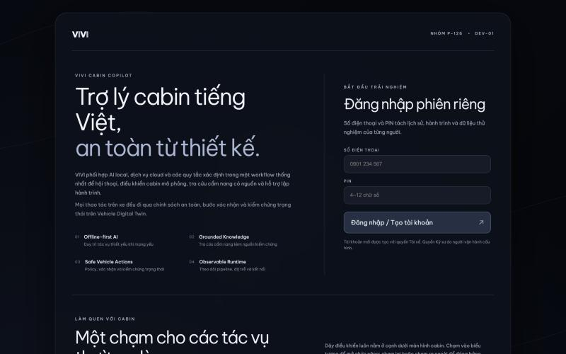
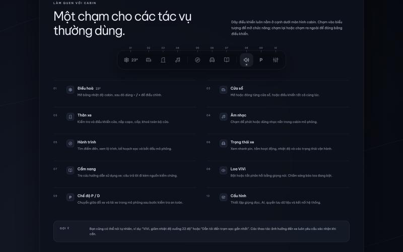
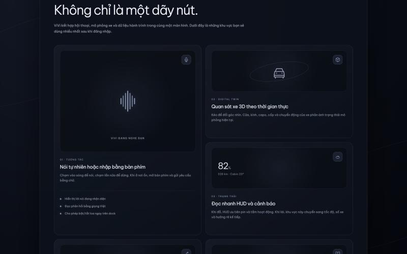
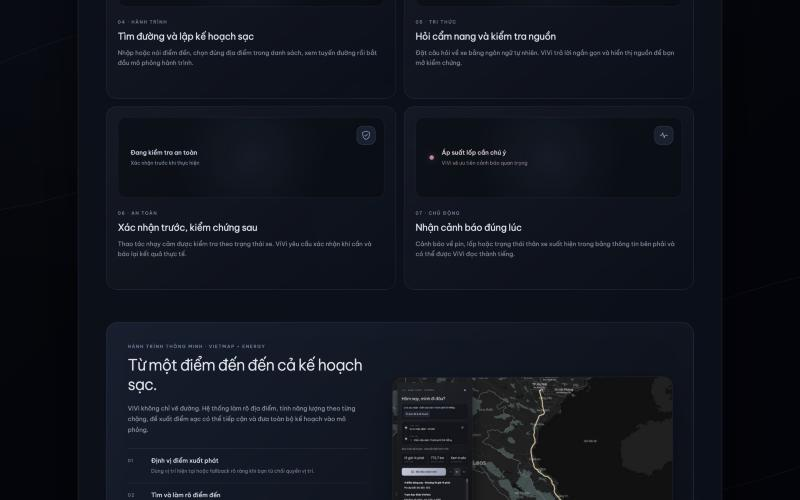

| Chế độ kết nối | Jetson | Cloud | Orchestrator chọn |
|---|---|---|---|
| 1 · Jetson + Internet | ✓ | ✓ | Cloud cho STT/LLM/TTS, RAG và tools trên Jetson |
| 2 · Mất Jetson | ✗ | ✓ | Cloud STT/LLM/TTS, retrieval lite trên laptop |
| 3 · Mất Internet | ✓ | ✗ | Local STT/LLM/TTS và RAG trên Jetson qua LAN |
| Mức | Những thao tác thuộc mức này | Cách xử lý |
|---|---|---|
| R0 | Đọc trạng thái xe · tra cẩm nang · trò chuyện · hỏi làm rõ | Không thay đổi gì trên xe. Trả lời ngay, không cần xác nhận. |
| R1 | Đặt nhiệt độ điều hòa · phát/dừng nhạc · sưởi ghế | Kiểm quyền, kiểm giá trị trong giới hạn, đọc trạng thái xe hiện tại rồi thực thi. |
| R2 | Mở hoặc đóng cửa sổ · khóa hoặc mở khóa cửa · mở capo, cốp | Nói lại chính xác thao tác sắp chạy, chờ "OK" hoặc "hủy". Xác nhận dùng một lần, hết hạn sau 30 giây. |
| R3 | Phanh, lái, tăng tốc · tắt tính năng an toàn · các yêu cầu ngoài phạm vi | Không có công cụ nào thực hiện. Luôn bị từ chối và ghi lại. |
| Phương án đã thử | Kết quả đo | Quyết định |
|---|---|---|
| ZeroTTS INT8 TensorRT | RTF 2,56 · load 113 s · RSS 7,18 GiB | Bỏ |
| ZeroTTS FP32 GPU, stream | RTF 0,80 · TTFA 109 ms | Đang dùng |
| VieNeu API (cloud) | TTFA 774 ms · CER 6,3% · hạn mức 50k token/ngày | Dự phòng |
| whisper-base | WER 42,8% · p50 527 ms | Thay |
| whisper-small | WER 32,5% · p50 821 ms | Đang dùng |
| Nhóm tool (số case) | Jetson vivi-qwen3-1.7b |
Gemini 3.5-flash-lite |
Chênh |
|---|---|---|---|
| Cabin — cửa, kính, nhạc, điều hòa, body (303) | 298 | 301 | +3 |
| vehicle_status (144) | 129 | 137 | +8 |
| navigation (153) | 104 | 137 | +33 |
| memory (40) | 21 | 34 | +13 |
| multi_tool (50) | 41 | 50 | +9 |
| information + dialogue + hard + adversarial (144) | 126 | 137 | +11 |
| Tổng (834) | 719 · 86,2% | 796 · 95,4% | +77 |
| Jetson | Gemini | |
|---|---|---|
| Latency p50 | 2,3 s | 1,2 s |
| Latency p95 | 4,2 s | 4,7 s |
| Repair / fallback | 13 / 5 | 4 / 0 |
eval/results/)